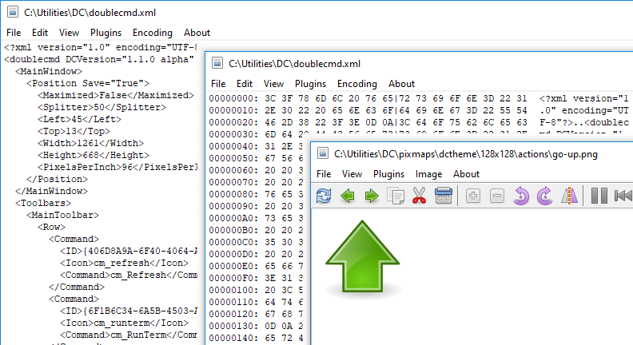
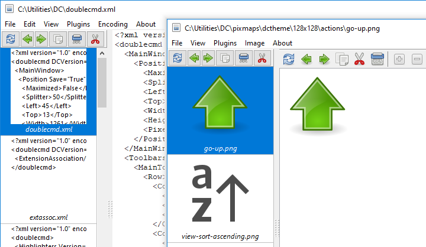
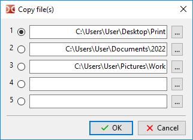

Der eingebaute Dateibetrachter ist dafür vorgesehen, Dateien beliebiger Größe im Text-, Hexadezimal- oder Binärformat sowie Bilddateien anzuzeigen.

Der ausgewählte Text wird automatisch in die Zwischenablage kopiert. Zum Abschalten können wir den Parameter <AutoCopy> verwenden.
Standardmäßig ist der Aufruf des Dateibetrachters (interner Befehl cm_View) der Taste F3 zugeordnet. Sind mehrere Dateien ausgewählt, wird die erste ausgewählte Datei geöffnet, und wir können diese Dateien mit den Befehlen Vorherige Datei und Nächste Datei wechseln (andernfalls laden diese Befehle Dateien im aktuellen Verzeichnis). Um trotzdem die Datei unter dem Cursor zu öffnen, können wir Shift+F3 verwenden. Wir können die Tastenkürzel im Einstellungsabschnitt Tasten > Tastenkürzel ändern.
Unterstützte Bildformate: BMP, CUR, GIF, ICNS, ICO, JPEG, PNG, PNM (PBM, PGM und PPM), PSD, SVG/SVGZ, TIFF, XPM. Zusätzlich, wenn die benötigten Bibliotheken vorhanden sind:
HEIF/HEIC und AVIF: libheif.dll (Windows) oder libheif.so.1 (Linux und andere Unix-ähnliche Systeme).
JPEG XL: libjxl.dll und libjxl_threads.dll (Windows) oder libjxl.so.0.n und libjxl_threads.so.0.N (Linux, „N“ ist eine Versionsnummer).
SVG/SVGZ: librsvg-2-2.dll, libcairo-2.dll und libgobject-2.0-0.dll (Windows) oder librsvg-2.so.2, libcairo.so.2 und libgobject-2.0.so.0 (Linux und andere Unix-ähnliche Systeme). Sind diese Dateien vorhanden, verwendet Double Commander die Bibliothek librsvg anstelle der eingebauten Grafikbibliothek Image32.
WebP: libwebp.so.N, wobei „N“ 7, 6 oder 5 ist (Linux und andere Unix-ähnliche Systeme).
Double Commander unterstützt die Bibliothek TurboJPEG, einen JPEG-Codec, der SIMD-Befehle nutzt, um das Dekodieren und Kodieren von Bildern zu beschleunigen: libturbojpeg.dll (Windows), libturbojpeg.so.0 (Linux und andere Unix-ähnliche Systeme) oder libturbojpeg.dylib (macOS).
Hinweis: Unter Windows müssen die Bibliotheken neben der Programmdatei von Double Commander, im Unterverzeichnis plugins\dll neben der Programmdatei oder im Windows-Systemverzeichnis liegen.
Double Commander unterstützt die Windows Imaging Component (Windows Vista und neuer): Die Windows Imaging Component (WIC) stellt ein erweiterbares Rahmenwerk für die Arbeit mit Bildern bereit. WIC enthält mehrere eingebaute Codecs (BMP, DDS, GIF, ICO, JPEG, JPEG XR, PNG und TIFF) sowie zusätzlich verfügbare externe Codecs für freie und proprietäre RAW-Bildformate, HEIF/HEIC und WebP. Double Commander überspringt die Codecs für BMP, GIF, ICO, JPEG, PNG und TIFF, weil diese Formate bereits unterstützt werden.
Unter Windows kann Double Commander den eingebauten HEIC-Decoder verwenden (Windows 11 24H2 und neuer).
Der eingebaute Dateibetrachter unterstützt das Speichern in den folgenden Bildformaten: BMP, ICO, JPEG (wir können die Qualität von 1 bis 100 wählen; standardmäßig 80, siehe <JpegQuality>), PNG (Double Commander verwendet dieselbe Farbtiefe wie im Originalbild) und PNM (Double Commander verwendet Binärformate, die Farbtiefe wird automatisch gesetzt: 1, 8 oder 24 Bit pro Pixel).
Hinweis: Wenn wir ein Bild ändern, müssen wir alle Änderungen mit den Befehlen Speichern oder Speichern unter sichern: Double Commander prüft den Status der Datei (geändert oder nicht) beim Schließen des Dateibetrachterfensters oder beim Wechsel zu einer anderen Datei nicht.
Für Ordner zeigt der Dateibetrachter (wenn kein passendes Plugin gefunden wird) den vollständigen Namen des Verzeichnisses unter dem Cursor, die Anzahl der Unterverzeichnisse, der Dateien und deren Gesamtgröße an (das Ergebnis entspricht der Aktion des Befehls Belegten Speicherplatz berechnen).
Wir können die Tastenkürzel für die im Dateibetrachter verfügbaren Befehle im Einstellungsabschnitt Tasten > Tastenkürzel zuweisen oder ändern (zur Kategorie Dateibetrachter wechseln). Tastenkürzel können getrennt für den Textmodus und den Bildmodus festgelegt werden.
Aussehen und Inhalt des Hauptmenüs hängen vom Anzeigemodus ab: Text, Bild oder WLX-Plugin.
Die Einträge Vorherige und Nächste laden die vorherige oder nächste Datei im Verzeichnis. Sind mehrere Dateien ausgewählt, laden die Befehle diese Dateien. Verwendet wird die Sortierreihenfolge im Dateipanel.
Die Einträge Speichern und Speichern unter ... sind nur beim Anzeigen von Bildern verfügbar.
Drucken ... – öffnet einen Systemdialog, um eine Datei zum Drucken zu senden. Drucken ist nur verfügbar, wenn mit Plugins angezeigt wird, die das Drucken von Dateien unterstützen.
Druckeinrichtung ... – öffnet einen Dialog zum Festlegen der Druckränder (linker, rechter, oberer und unterer Seitenrand).
Neu laden – Double Commander liest die Datei zwangsweise neu ein, ohne das Fenster des Dateibetrachters zu schließen. Das ist praktisch, wenn die Datei von einem externen Programm geändert wurde.
Automatisch neu laden – nur für den Textmodus: Wenn aktiviert, prüft Double Commander alle 2 Sekunden die Dateigröße und liest die Datei neu ein und rollt ihren Inhalt ans Ende, wenn sie sich ändert. Das ist praktisch, um ständig aktualisierte Protokolldateien anzuzeigen. Dieser Modus gilt nur für die aktuelle Datei und wird beim Wechsel zu einer anderen Datei oder beim Schließen des Dateibetrachterfensters ausgeschaltet. Wenn aktiviert, zeigt Double Commander in der Statusleiste vor dem Dateinamen ein Sternchen „*“ an.
Beenden – Schließt das Fenster des Dateibetrachters.
Das Menü enthält Befehle zum Auswählen und Kopieren von Text sowie Befehle zum Suchen im Inhalt der angezeigten Datei: Suchen, Weitersuchen und Rückwärts suchen.
Suchoptionen:
Groß-/Kleinschreibung beachten – gibt an, dass Groß- und Kleinbuchstaben unterschieden werden, zum Beispiel wären „Fallout“ und „fallout“ verschieden.
Hexadezimal – sucht nach Hexadezimalzeichen (ohne Unterscheidung der Groß-/Kleinschreibung, mit oder ohne Leerzeichen zwischen den Zeichen, zum Beispiel „C0 C1 C2“ oder „c0c1c2“).
Reguläre Ausdrücke – wenn aktiviert, können wir reguläre Ausdrücke verwenden.
Rückwärts – kehrt die Suchrichtung um: Suche vom Ende der Datei statt vom Anfang.
Dieses Menü dient zum Umschalten des Anzeigemodus und enthält mehrere zusätzliche Optionen.
Vorschau – Blendet das Vorschau-Panel ein oder aus.
Das Programm wählt den passenden Anzeigemodus automatisch. Die folgenden Einträge erlauben, ihn zwangsweise umzuschalten:
Als Text anzeigen – Zeigt den Dateiinhalt (oder die Ausgabe eines Konsolenbefehls, siehe Dateizuordnungen) als einfachen Text. Wir können die Höchstzahl der Zeichen festlegen, die in einer Textzeile angezeigt werden, bevor sie in die nächste umbrochen wird (standardmäßig 1024).
Als Binär anzeigen – Zeigt den Dateiinhalt so, wie er ist. Nicht druckbare Zeichen werden als Punkte angezeigt, beim Kopieren von Text werden Steuerzeichen (Zeilenvorschub, Wagenrücklauf, Tabulator und so weiter) jedoch berücksichtigt. Verwendet wird eine feste Zeilenbreite von 80 Zeichen.
Als Hex anzeigen – Das Fenster zeigt drei Spalten: den Abstand vom Dateianfang (in Byte), 16 Zeichen in hexadezimaler Darstellung und dieselben 16 Zeichen als einfachen Text. Nicht druckbare Zeichen werden als Punkte angezeigt. Beim Auswählen von Werten in der zweiten Spalte werden die entsprechenden Zeichen in der dritten Spalte ausgewählt (und umgekehrt).
Als Dezimal anzeigen – Wie zuvor, aber die Bytes werden in dezimaler Schreibweise dargestellt.
Als Buch anzeigen – Ein besonderer Anzeigemodus: Der Text wird in mehreren Spalten angezeigt (wie eine Buchdoppelseite oder eine Zeitung). Wir können Schriftart und Größe, Text- und Hintergrundfarbe sowie die Anzahl der Spalten (1, 2 oder 3) festlegen.
Grafik – wechselt zur Bildanzeige. Die Liste der unterstützten Bildformate steht am Anfang der Seite.
Plugins – Anzeige mit WLX-Plugins. Kann die ausgewählte Datei von mehreren installierten Plugins geöffnet werden, schalten wiederholte Aufrufe dieses Befehls sie im Kreis weiter.
Office-XML (nur Text) – Der Dateibetrachter zeigt Text aus XML-basierten Office-Dokumenten: Microsoft Office (DOCX, XLSX) und OpenOffice/LibreOffice (ODT, ODS). Ohne Textformatierung, aber unter Beibehaltung der Absätze.
Code – Der Dateibetrachter zeigt die ausgewählte Datei in der Codeansicht: mit Syntaxhervorhebung und Zeilennummern. Es werden dieselben Hervorhebungsregeln und Erweiterungslisten verwendet wie für den eingebauten Texteditor (weitere Einzelheiten hier). In diesem Modus verwendet der Dateibetrachter die Einstellungen des eingebauten Editors, siehe auch die Beschreibung von <SynEditMask>.
Plugins haben Vorrang vor anderen unterstützten Anzeigemodi.
Text umbrechen – schaltet den Umbruch von Zeilen ein oder aus, die nicht in das Fenster passen (an Wortgrenzen).
Textcursor anzeigen – schaltet die Anzeige eines blinkenden Textcursors ein.
Das Menü enthält eine Liste aller hinzugefügten und aktivierten WLX-Plugins. Der erste Teil des Menüs enthält Plugins, die für die aktuelle Datei geeignet sind (Double Commander prüft die Erkennungszeichenkette), alle übrigen werden im zweiten Teil aufgeführt.
Ohne Sortierung wird dieselbe Reihenfolge verwendet, in der die Plugins im entsprechenden Einstellungsabschnitt hinzugefügt wurden.
Beim Anzeigen von Dateien in Textmodi: Menü mit einer Liste der verfügbaren Textkodierungen, die automatische Erkennung ist standardmäßig aktiviert.
Bei der Verwendung von Plugins enthält dieses Menü nur drei Einträge:
Automatisch erkennen – automatische Erkennung der Kodierung.
ANSI – standardmäßige ANSI-Kodierung des Systems (hängt vom Systemgebietsschema ab).
OEM – standardmäßige OEM-Kodierung (DOS) des Systems (hängt vom Systemgebietsschema ab).
Das Menü Bild ist beim Anzeigen von GIF-Dateien nicht verfügbar.
Einpassen – ändert die Bildgröße so, dass es das Fenster des Dateibetrachters ausfüllt (das Seitenverhältnis wird automatisch beibehalten).
Nur große einpassen – ändert die Bildgröße nur, wenn es größer als das aktuelle Fenster ist (das Seitenverhältnis wird automatisch beibehalten).
Zentrieren – Das Bild wird in der Mitte des Dateibetrachterfensters angezeigt statt in der oberen linken Ecke.
Transparenz anzeigen – schaltet die Verwendung eines Schachbrettmusters als Hintergrund für transparente Bildteile ein.
Das Untermenü Drehen enthält mehrere ähnliche Aktionen:
Die ersten drei Befehle drehen das Bild um eine angegebene Gradzahl um seinen Mittelpunkt: + 90 (90 Grad nach rechts), + 180 und - 90 (90 Grad nach links).
Horizontal spiegeln – spiegelt das Bild horizontal, das heißt von links nach rechts.
Vertikal spiegeln – spiegelt das Bild vertikal, das heißt von oben nach unten.
Vergrößern und Verkleinern – Befehle zum Ändern des Bildmaßstabs (oder wir können Ctrl+Mausrad verwenden).
Vollbild – schaltet das Fenster in den Vollbildmodus (der Fensterinhalt ohne die übliche Fensterumrahmung des Betriebssystems). Dieser Modus ist nicht nur beim Anzeigen von Bildern verfügbar, es genügt, die Tastenkürzel zu verwenden (standardmäßig Alt+Enter).
Das Untermenü Bildschirmfoto – erstellt ein Bildschirmfoto der Arbeitsfläche, sofort oder mit Verzögerung (3 oder 5 Sekunden).
Bei der Verwendung von Plugins enthält dieses Menü nur drei Einträge: Einpassen, Nur große einpassen und Zentrieren.
Nur der Name des Dateibetrachters.
Mehrere Befehle des internen Dateibetrachters und zusätzliche Werkzeuge, zusammengefasst in der Werkzeugleiste. Nur beim Anzeigen von Bildern.
Aktuelle Datei neu laden – Double Commander liest die Datei zwangsweise neu ein, ohne das Fenster des Dateibetrachters zu schließen. Das ist praktisch, wenn die Datei von einem externen Programm geändert wurde.
Die Schaltflächen Vorherige Datei laden und Nächste Datei laden laden die vorherige oder nächste Datei im Verzeichnis. Verwendet wird die Sortierreihenfolge im Dateipanel.
Datei kopieren – siehe Dateien kopieren/verschieben.
Datei verschieben – siehe Dateien kopieren/verschieben.
Datei löschen – löscht die angezeigte Datei nach einer Bestätigungsanfrage.
Vergrößern und Verkleinern – Befehle zum Ändern des Bildmaßstabs (oder wir können Ctrl+Mausrad verwenden).
Um -90 Grad drehen – dreht das Bild um 90 Grad nach links um seinen Mittelpunkt.
Um +90 Grad drehen – dreht das Bild um 90 Grad nach rechts um seinen Mittelpunkt.
Spiegeln – Der Befehl Horizontal spiegeln: spiegelt das Bild horizontal, das heißt von links nach rechts.
Die nächste Gruppe gilt nur für GIF-Animationen und ICO-Dateien:
Pause/Wiedergabe – hält die Wiedergabe der Animation an.
Vorheriges Einzelbild und Nächstes Einzelbild – schalten die Einzelbilder der Animation vor und zurück. Ist eine ICO-Datei geöffnet, erlauben diese Befehle, zwischen den in der Datei enthaltenen Bildern zu wechseln.
Einzelbild exportieren – ermöglicht, das aktuelle Einzelbild der Animation zu speichern.
Die nächste Schaltflächengruppe betrifft die Auswahl:
Hervorheben – schaltet das Auswahlwerkzeug (Rechteck) ein.
Zuschneiden – schneidet das Bild anhand der Auswahl zu.
Rote Augen – Funktion zum Entfernen roter Augen.
Die nächste Schaltflächengruppe betrifft das Zeichnen:
Zeichnen – schaltet die Zeichenwerkzeuge ein.
Rückgängig – macht die letzte Aktion rückgängig.
Menü zur Auswahl eines Zeichenwerkzeugs: Stift, Rechteck und Ellipse.
Breite – Menü zur Auswahl der Linienbreite (von 1 bis 25 Pixel).
Farbe – ermöglicht, die Farbe der Linie festzulegen.
Größe ändern – Das Werkzeug zum Ändern der Bildgröße ermöglicht, Breite und Höhe in Pixeln anzugeben (das Seitenverhältnis wird automatisch beibehalten).
Vollbild – schaltet das Fenster in den Vollbildmodus (der Fensterinhalt ohne die übliche Fensterumrahmung des Betriebssystems) und zurück. Dieser Modus ist nicht nur beim Anzeigen von Bildern verfügbar, es genügt, die Tastenkürzel zu verwenden (standardmäßig Alt+Enter).
Wenn das Fenster auf den ganzen Bildschirm vergrößert ist, wird eine zusätzliche Schaltfläche Diaschau verfügbar: Wir können das automatische Laden des nächsten Bildes im aktuellen Verzeichnis einschalten und die Anzeigedauer der Datei festlegen (von 1 bis 25 Sekunden).
Aussehen und Inhalt der Statusleiste hängen vom Anzeigemodus ab: Text, Bild oder WLX-Plugin.
Am Anfang der Statusleiste werden die Nummer der geöffneten Datei und die Gesamtzahl der Dateien im aktuellen Verzeichnis angezeigt.
Text: Position im Dateiinhalt (in Byte und Prozent), Dateigröße und Textkodierung.
Bild: aktuelle Auflösung (in Pixeln und Prozent), tatsächliche Dateiauflösung und Größe der Auswahl (bei Verwendung des Auswahlwerkzeugs).
Bei ICO-Dateien werden zusätzlich die Gesamtzahl der Bilder in der Datei, die Nummer des aktuellen Bildes und seine Größe angezeigt.
WLX-Plugin: Plugin-Name und Kodierung.
Am Ende der Statusleiste wird der vollständige Name der angezeigten Datei angezeigt.
Panel im linken Teil des Fensters. Die aufgelisteten Dateien werden als Miniaturansichten angezeigt (mit dem Dateinamen unter der Miniaturansicht). Es sieht aus wie der Miniaturmodus im Dateipanel.

Verwendet wird die Sortierreihenfolge im Dateipanel. Die Datei, mit der der Dateibetrachter gestartet wurde, steht immer an erster Stelle der Liste.
Das Vorschau-Panel kann verbreitert werden, um eine Liste von Miniaturansichten in mehreren Spalten anzuzeigen.
Eigene Werkzeugleiste mit mehreren häufig verwendeten Funktionen: Aktuelle Datei neu laden, Vorherige Datei laden, Nächste Datei laden, Datei kopieren, Datei löschen und Datei verschieben, siehe die Beschreibung der ähnlichen Schaltflächen oben.
Der Dateibetrachter kann die angezeigte Datei über Tastenkürzel oder Schaltflächen auf der Werkzeugleiste oder auf dem Vorschau-Panel kopieren oder verschieben (interne Befehle des Dateibetrachters cm_CopyFile und cm_MoveFile). Wir können bis zu 5 Verzeichnisse angeben und zwischen ihnen wechseln:

Das ist praktisch, wenn wir die angezeigten Dateien in verschiedene Verzeichnisse legen oder eine zusätzliche Kopie anlegen müssen.
Zusätzlicher Anzeigemodus für Dateien (standardmäßig Ctrl+Q): Statt in einem eigenen Fenster wird der Inhalt der Datei unter dem Cursor im gegenüberliegenden (inaktiven) Dateipanel angezeigt. Wenn wir zum nächsten Eintrag wechseln, wird der angezeigte Inhalt aktualisiert. So lässt sich der Inhalt von Dateien einfach durch Bewegen des Cursors im Dateipanel ansehen.
In den Einstellungen der Dateizuordnung hinzugefügte Aktionen „Anzeigen“ werden ignoriert, außer bei Anwendungen, die mit dem Makro {!DC-VIEWER} gestartet werden.
Für Ordner arbeitet dieser Modus ähnlich wie das gewöhnliche Fenster des Dateibetrachters, aber auf dem Eintrag „..“ zeigt Double Commander Informationen über das übergeordnete Verzeichnis an.
Die Schnellansicht kann durch erneutes Drücken von Ctrl+Q ausgeschaltet werden. Sie wird außerdem ausgeschaltet, wenn ein beliebiges Panel (aktiv oder inaktiv) zu einer anderen Registerkarte wechselt.
Nicht alle Befehle des Dateibetrachters können in diesem Modus arbeiten, zum Beispiel die Befehle zum Laden der vorherigen oder nächsten Datei im Verzeichnis (standardmäßig P und N).
Ein Rechtsklick auf die Statusleiste öffnet ein Menü, das mehrere Untermenüs enthält (abhängig vom aktuellen Modus):
Modus „Plugins“: „Ansicht“, „Plugins“, „Kodierung“ und „Bild“;
Modus „Grafik“: „Ansicht“, „Plugins“ und „Bild“;
andere Modi: „Ansicht“, „Plugins“ und „Kodierung“.
(Siehe Beschreibung oben.)
Einige Elemente der Oberfläche können ausgeblendet sein (zum Beispiel blendet Double Commander beim Anzeigen von Bildern im Modus „Grafik“ die Werkzeugleiste aus). Für Plugins gibt es keine allgemeine Regel oder Empfehlung, die Entscheidung trifft der Autor des Plugins.
Siehe die Beschreibung der Einstellungsabschnitte von Double Commander: Werkzeuge > Dateibetrachter und Farben (Kategorie Dateibetrachter). Es gibt mehrere Parameter, die nur manuell in der Konfigurationsdatei doublecmd.xml geändert werden können.